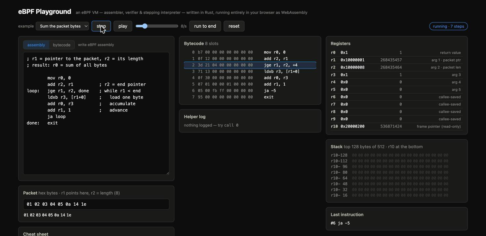

Write, verify and single-step eBPF programs — an entire eBPF machine reimplemented in Rust, running inside a browser tab.
┌──────────────────────────── Browser tab ─────────────────────────────┐ │ ebpf-vm (Rust → WASM) SvelteKit │ │ · assembler (labels, 2-pass) ◄── editor + examples │ │ · verifier-lite (r10 writes, jump ──► diagnostics in listing │ │ bounds, div/0, unknown helpers…) │ │ · disassembler ──► bytecode listing │ │ · stepping interpreter ──► registers · stack dump │ │ r0–r10, 512 B stack, packet mem current insn · helper log │ └──────────────────────────────────────────────────────────────────────┘
Four components, one Rust crate. The browser never leaves the page.
; sum the packet bytes mov r0, 0 add r2, r1 ; end ptr loop: jge r1, r2, done ldxb r3, [r1+0] add r0, r3 add r1, 1 ja loop done: exit
; # //), and the kernel-doc mnemonic names.lddw, every load/store width, all conditional jumps, call, exit.lddw.
cargo test — 8 cases covering loops, stack round-trips, signed compares and every error path.# the machine is the WASM module — # no Docker, no Linux needed cd web && pnpm install && pnpm dev # → http://localhost:5174 # rebuild the VM after editing vm/ wasm-pack build vm --target web \ --release --no-pack \ --out-dir ../web/src/lib/ebpf-vm
cd vm && cargo test runs the interpreter suite natively.